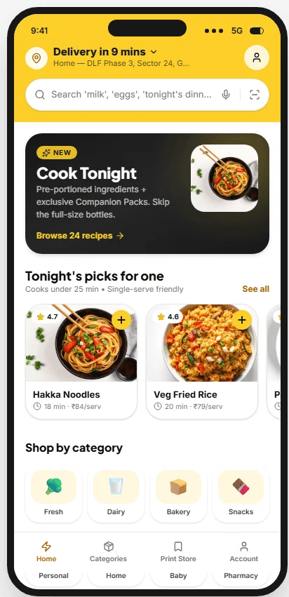
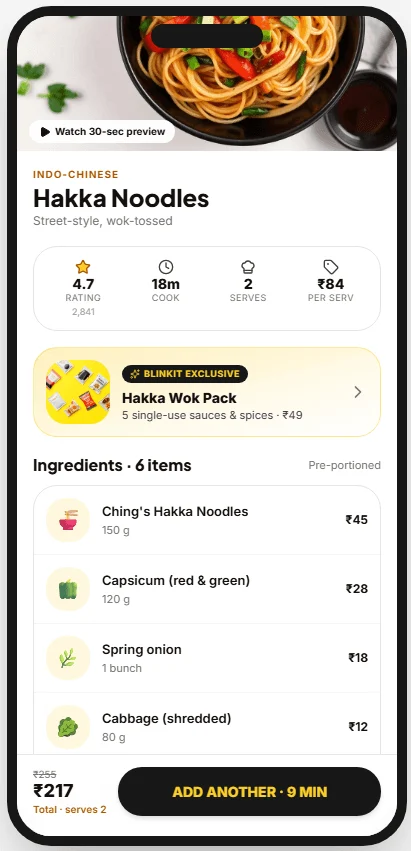
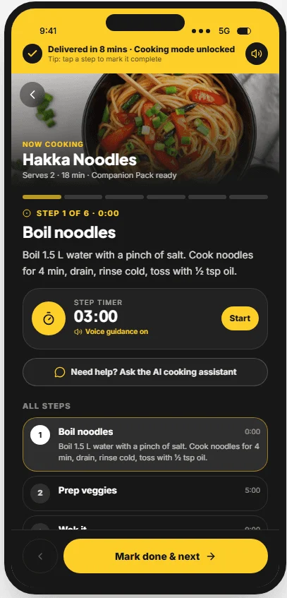
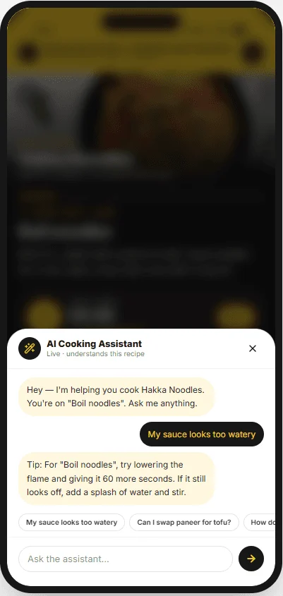
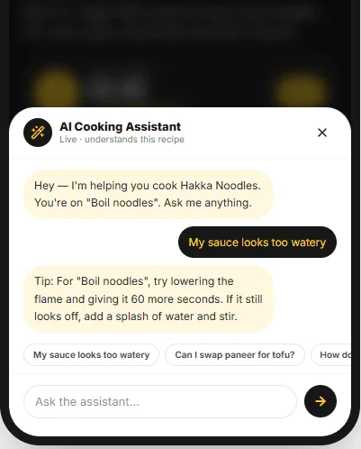

Side quest 01 · Product concept · Blinkit
Cook Tonight.
Transforming Blinkit’s recipe experience into an end-to-end cooking journey: bundled ingredients, guided cooking and contextual AI help.
- Project
- RoleProduct strategy, UX, AI experienceTimeline2-week product conceptPlatformMobile commerce · AI assistant



01 · Overview
Blinkit already owns the grocery moment. Cook Tonight explores what happens when it owns the cooking moment too.
The concept connects recipe inspiration, ingredient availability, one-tap companion packs, meal planning, guided cooking and an AI cooking assistant into one product loop. The goal is not to make Blinkit look like a recipe app. It’s to extend commerce into the moment people decide what to make tonight.
Recipes inspire, then the journey breaks
Recipes inspire intent, but the cooking journey breaks across search, planning, shopping, substitutions and execution.
A guided cooking layer
Turns recipe discovery into a shoppable, adaptable, AI-assisted meal experience.
Help users finish dinner
Increase basket value, repeat meal planning and post-checkout engagement by helping users complete dinner, not just buy ingredients.
02 · Opportunity
Recipes inspire users. They don’t help them cook.
A grocery app can already solve availability, price and delivery. But dinner is still assembled outside the product: in saved reels, memory, substitutions, family preferences and last-minute decisions. Cook Tonight treats the meal as the unit of design.
03 · Journey
The current journey ends at checkout. The future journey ends at dinner.
04 · Solution
From grocery shopping to guided cooking.
Cook Tonight brings recipe discovery, shoppable ingredients, substitutions, meal planning and cooking guidance into one system. The interface is intentionally quiet: the product should feel like a confident assistant, not another content feed.

05 · Features
Six moments that turn a grocery basket into a cooking system.
Recipe discovery
A discovery surface that filters recipes by available time, pantry overlap and what Blinkit can deliver now.
Business reasoning: Capture meal intent before users leave the app to search elsewhere.
Recipe detail
The detail page becomes a conversion surface: ingredients, substitutions, prep and companion items stay connected.
Business reasoning: Reduce drop-off between inspiration and basket creation.
Companion packs
Side dishes, missing basics and substitutions are bundled as contextual add-ons, so users buy only the sauces and seasonings a single meal needs.
Business reasoning: A new revenue stream through high-margin add-ons, without adding friction to checkout.
AI meal planner
Weekly planning turns Blinkit from an urgent delivery app into a repeat dinner-planning habit.
Business reasoning: A reason to return before the next urgent grocery need.
Cooking mode
A large-step, timer-led cooking surface keeps the product useful after checkout, the moment most grocery apps disappear.
Business reasoning: Post-purchase engagement until the meal is done.
AI cooking assistant
Substitution and troubleshooting support makes the product resilient when real kitchens don’t match ideal recipes.
Business reasoning: AI that helps finish a task, not a standalone chatbot.
AI cooking assistant
Contextual AI assistance
The assistant understands the active recipe, the current cooking step and the ingredients at hand, so its guidance fits the moment instead of being generic cooking advice.
Business reasoning: differentiate Blinkit’s cooking experience with AI that supports task completion rather than acting as a standalone chatbot.

06 · Decisions
The product was designed around meals, not groceries.
Decision 1
Make the meal the primary unit.
Reasoning: Users don’t think in isolated ingredients when deciding dinner. They think in outcomes, time and effort.
Trade-off: Fewer grocery-first merchandising moments, in favour of higher meal intent.
Decision 2
Keep cooking mode calm and sequential.
Reasoning: Cooking is hands-busy and time-sensitive. The interface needs large steps, strong hierarchy and little navigation.
Trade-off: Less content density, more confidence while cooking.
Decision 3
Use AI only when the recipe breaks.
Reasoning: AI shouldn’t dominate discovery. It’s most valuable for substitutions, timing, mistakes and constraints.
Trade-off: Less AI spectacle, more practical reliability.
07 · Impact
Designed to extend Blinkit’s value beyond checkout.
These are product hypotheses, not measured results.
Higher basket value
Companion packs and complete meal baskets increase contextual add-ons.
More repeat intent
Meal planning creates a reason to return before the next urgent grocery need.
Post-checkout utility
Guided cooking extends Blinkit’s role into the kitchen after delivery arrives.
08 · Prototype
A focused prototype for the dinner journey, not a full grocery redesign.
I built the working prototype with Lovable, so the flow can be tried end to end, not just viewed.
Product concept. Not affiliated with or endorsed by Blinkit.